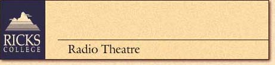
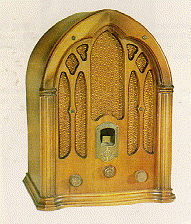

 |
|
| July 19-25,1998 - $340 | Top • Back |
| OLD TIME PLAYS,
BIG BAND SOUNDS, AND THE HISTORY OF A MEMORABLE AGE
Remember the years when you sat listening to the family radio? Relive those memorable days during a week-long look at radio in the early decades. This radio tribute will involve participants in recreating a radio play. Classes include how special effects, dialogue, and music are created in a studio. As a final project, record a play and receive a cassette tape of your finished production. The week doesn't end there! Sit back and enjoy the sounds from Big Bands and Jazz groups. An enlightening look at the influence music had on such a dramatic period. Trace historical memories through a study of some of the greatest moments in this past era. A dynamic focus on the roaring 20's to the early 50's. |
|